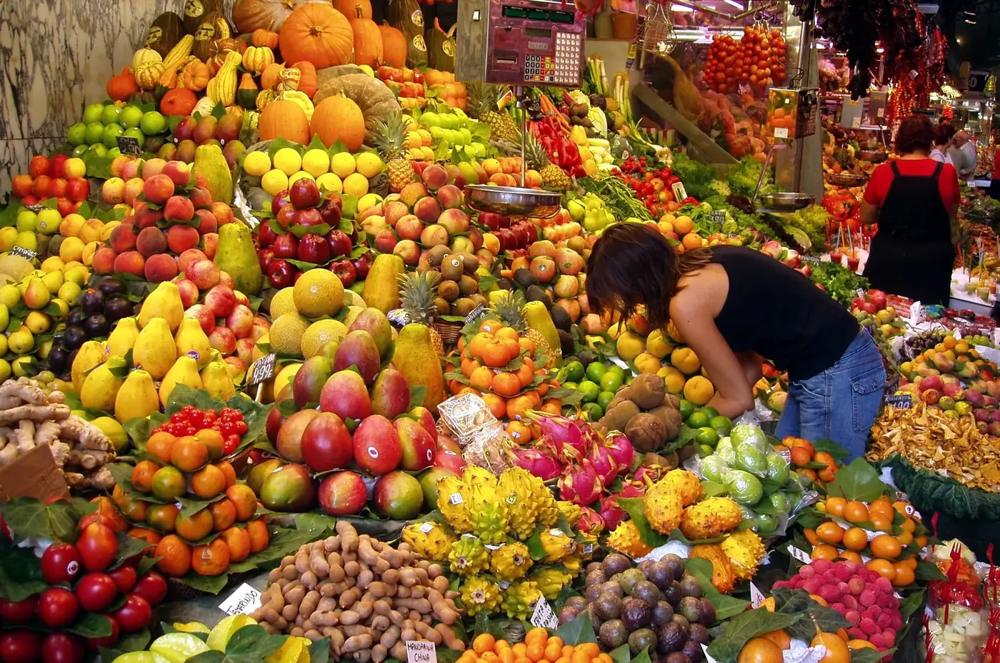

Guía de estudio · partida doble y normas del CINIF
Contabilidad con manzanas
Cada idea se explica con cifras completas, en pesos: $1,000.00. Primero un puesto de manzanas, de la operación 1 a la 7. Luego el ejercicio de Distribuidora del Valle, S.A. de C.V.
Baja con el dedo, de arriba hacia abajo. Portada: mercado de Stroud, BazzaDaRambler, CC BY 2.0.
01Cómo usar esta guía
Tu racha
Sellos de manzana
Aún no hay sello. Cualquier práctica de hoy cuenta.
Se guarda en este teléfono. Un sello por día, si marcas una sección, armas un asiento, volteas una tarjeta o contestas el mini examen.
Avance 0 %
El orden de esta guía
Las reglas, con un ejemplo en pesos.
Un puesto de manzanas, de la operación 1 a la 7, con diario, mayor, balanza y estados que cuadran.
Las NIF, una por una, ligadas a una cuenta de esos ejemplos.
El ejercicio de Distribuidora del Valle, las 15 operaciones, con Caja y Bancos después de cada una.
Práctica: armar asientos, cargo o abono, tarjetas y un mini examen.
definiciónNIF, importe o fechatrampa o error

Puesto de fruta en un mercado de Barcelona. Foto de Daderot, Wikimedia Commons. Licencia CC BY-SA 3.0. Recorte y conversión a WebP.
02Las reglas, con cifras
Qué es la contabilidad
Es el sistema con el que una entidad identifica, valúa, reconoce y presenta sus transacciones para preparar estados financieros útiles.
En pesos: si compras 100 manzanas a $10.00 cada una, no basta con decir “hay fruta”. Hay que anotar que el inventario subió $1,000.00 y que el banco bajó $1,000.00.
La ecuación: Activo = Pasivo + Capital
Todo lo que el puesto tiene (activo) se explica por lo que debe (pasivo) más lo que es de las socias (capital).
Pasivo $0.00 + capital social $20,000.00 = $20,000.00.
Por eso $20,000.00 = $0.00 + $20,000.00.
Si más adelante hay deudas o utilidad, los dos lados siguen sumando lo mismo.
Partida doble
Todo hecho se anota en por lo menos dos cuentas, y la suma de cargos es igual a la suma de abonos.
Ejemplo: 100 manzanas × $10.00 = $1,000.00, pagadas del banco.
Cuenta
Cargo
Abono
Inventarios
$1,000.00
a) Bancos
$1,000.00
Sumas iguales
$1,000.00
$1,000.00
Cargo y abono
La cuenta T tiene dos lados. El izquierdo es el cargo (debe). El derecho es el abono (haber).
Clase
Aumenta con
Disminuye con
Saldo normal
Activo
Cargo
Abono
Deudor
Pasivo
Abono
Cargo
Acreedor
Capital
Abono
Cargo
Acreedor
Ingresos
Abono
Cargo
Acreedor
Gastos
Cargo
Abono
Deudor
Regla corta: lo que el puesto tiene y lo que gasta crece a la izquierda. Lo que debe, lo que es suyo y lo que gana crece a la derecha.
Dos manzanas rojas. Foto de Paolo Neo, dominio público, vía Wikimedia Commons. Conversión a WebP.
03El puesto de manzanas, operación por operación
Siete operaciones, con todas las cifras
Es un ejemplo didáctico, no el ejercicio del documento. Cada manzana se valúa a $10.00 al comprar. Las socias aportan $20,000.00. Luego se compra, se vende con su costo, se paga renta, se pide un préstamo y se paga al proveedor. Todas las sumas se volvieron a calcular y cuadran.
Libro de cuentas, páginas 64 y 65. Fotografía de Donald S. Erdman, Biodiversity Heritage Library, vía Wikimedia Commons. Sin restricciones de uso. Recorte y conversión a WebP.
04Las NIF que sí aplican aquí
Normas del CINIF
Solo se citan normas con título oficial comprobado en fuentes del CINIF y en el índice de la edición NIF 2026 (vigentes al 1.º de enero de 2026). No se inventan números de párrafo. Cada una se explica en una frase, ligada a una cuenta de los ejemplos. El CINIF es el Consejo Mexicano de Normas de Información Financiera y de Sostenibilidad, A.C., responsable de emitir las NIF en México.
Cada cuenta, con su NIF
Fuentes de los títulos: CINIF, Listado de normas promulgadas a 2024 (cinif.org.mx); CINIF, Libro electrónico NIF 2026; índice de la edición profesional NIF 2026 del IMCP y de Contenido Fiscal.
Puesto de mercado con fruta, canastos y caja. Foto de Fortepan, donante Konok Tamás, vía Wikimedia Commons. Licencia CC BY-SA 3.0. Recorte y conversión a WebP.
05Distribuidora del Valle, S.A. de C.V.
El ejercicio, asiento por asiento
Quince operaciones del documento. Aquí se copian con ortografía cuidada y con importes en formato $50,000.00. Después de cada asiento verás el saldo de Caja y de Bancos. Las cifras se volvieron a sumar.
Ojo: errores y omisiones del ejercicio
El libro cuadra, y aun así hay tres puntos que conviene mirar con calma. No son un reproche al planteamiento: son trampas típicas de examen y de la práctica.
La operación 2 deja la Caja en saldo acreedor. Después de la operación 1 hay $50,000.00 en Caja. El asiento deposita $60,000.00. Caja queda en −$10,000.00 en ese momento y cierra el ejercicio en −$5,200.00 (saldo acreedor). Un saldo acreedor en efectivo no es razonable: no se puede “deber” dinero en el cajón. Lo más probable es un error de cifra (por ejemplo, que el depósito debiera ser de $50,000.00). Si se corriera el depósito a $50,000.00, Caja cerraría en $4,800.00 deudor y Bancos en $114,000.00 − $10,000.00 = $104,000.00 deudor. El total de activo no cambiaría, porque solo se mueve efectivo de un lado a otro.
La venta de la operación 9 no da de baja el inventario. El ejercicio usa la cuenta Inventarios, propia de un sistema perpetuo, pero solo registra Caja por $18,000.00 / Ventas por $18,000.00. Falta, cuando se conoce el costo, el asiento Costo de ventas / Inventarios (NIF C-4 y, en su caso, NIF D-2). Como el costo no se indica, la utilidad de $15,800.00 está sobreestimada y el inventario se queda en $25,000.00 como si no se hubiera vendido nada.
No hay IVA. En un primer curso es una simplificación aceptable. En la operación real de una S.A. de C.V. habría que analizar el IVA trasladado en ventas y servicios y el IVA acreditable en compras y gastos, cuando proceda. Aquí no se inventan esas cuotas.
Cuentas T del mayor
Balanza de comprobación
Debe sumar $167,200.00 en cada columna, si no se activa la corrección de la operación 2.
Activo $153,800.00 = pasivo $38,000.00 + capital $115,800.00 (capital social $100,000.00 + utilidad $15,800.00).
Calculadora de bolsillo. Foto de Dimljacic, Wikimedia Commons. Licencia CC BY-SA 4.0. Recorte y conversión a WebP.
06A practicar
Asientos, tarjetas y un mini examen
Arma el asiento
Son las siete operaciones del puesto de manzanas, con las mismas cifras. Elige cuentas, lado e importe. Luego toca Calificar.
Juego: ¿cargo o abono?
Ocho preguntas con cifras del puesto. Toca el lado correcto.
Pon cada cuenta en su cajón
Toca una ficha y luego el cajón (Activo, Pasivo, Capital, Ingreso o Gasto). En el celular es más firme que arrastrar.
Tarjetas de repaso
Toca la tarjeta para voltearla. Usa Anterior y Siguiente para cambiar de ficha.
Mini examen
Quince preguntas, una por pantalla. Al final sale una calificación sobre 10. En “Estudiar con explicación” ves el porqué al responder. En “Hacer el examen” solo ves si acertaste, y al final la calificación.
IMCP. NIF 2026, edición profesional (índice y nota sobre las NIF B-1 y B-3 con vigencia en 2028). tienda.imcp.org.mx
Contenido Fiscal. Índice de la edición NIF 2026, versión profesional.
El planteamiento y el libro diario resuelto de las quince operaciones proceden del ejercicio “Distribuidora del Valle, S.A. de C.V.”. Las sumas se volvieron a calcular aquí. El puesto de manzanas es un ejemplo didáctico, con cifras propias, para aprender el método antes del ejercicio.
Créditos de las fotografías
Portada: selección de manzanas en el mercado de Stroud. Foto de BazzaDaRambler, vía Wikimedia Commons. Licencia CC BY 2.0. Recorte y conversión a WebP.
Puesto de fruta en un mercado de Barcelona. Foto de Daderot, vía Wikimedia Commons. Licencia CC BY-SA 3.0. Recorte y conversión a WebP.
Dos manzanas rojas. Foto de Paolo Neo, dominio público, vía Wikimedia Commons. Conversión a WebP.
Libro de cuentas, páginas 64 y 65. Fotografía de Donald S. Erdman, Biodiversity Heritage Library, vía Wikimedia Commons. Sin restricciones de uso. Recorte y conversión a WebP.
Puesto de mercado con fruta, canastos y caja. Foto de Fortepan, donante Konok Tamás, vía Wikimedia Commons. Licencia CC BY-SA 3.0. Recorte y conversión a WebP.
Calculadora de bolsillo. Foto de Dimljacic, vía Wikimedia Commons. Licencia CC BY-SA 4.0. Recorte y conversión a WebP.